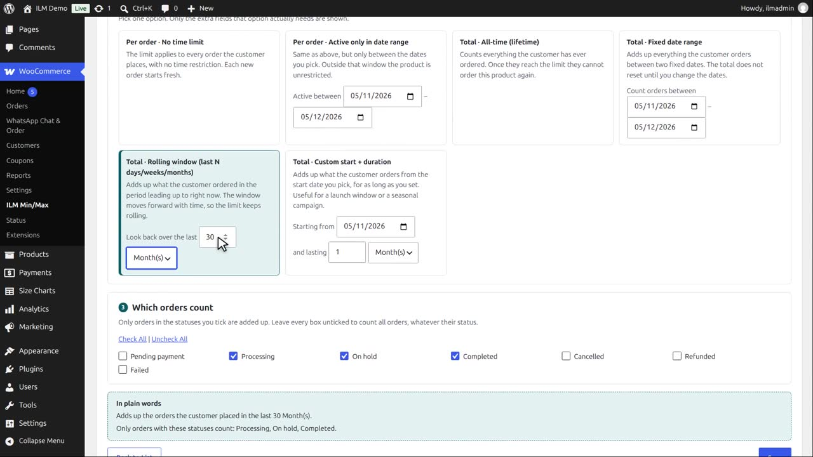
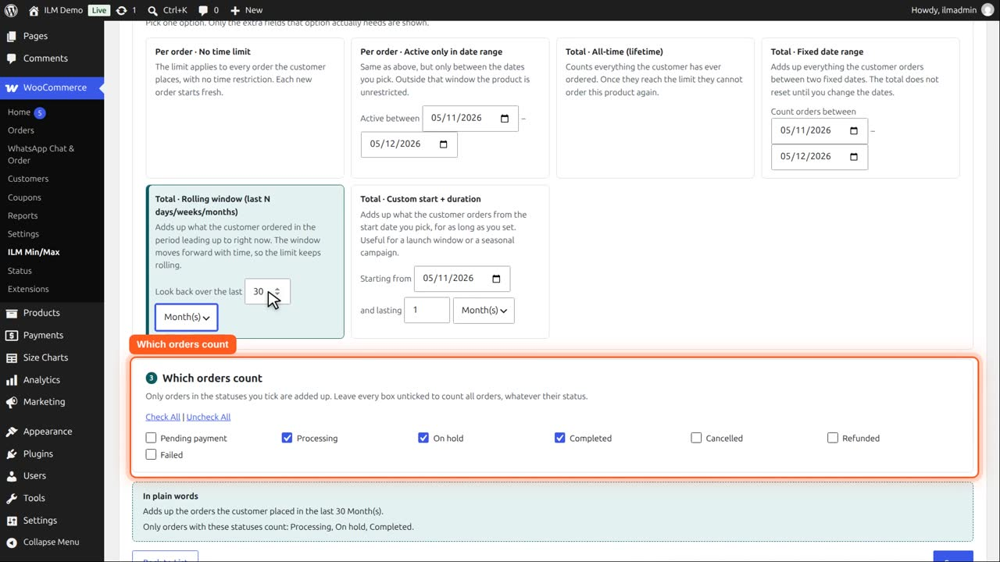
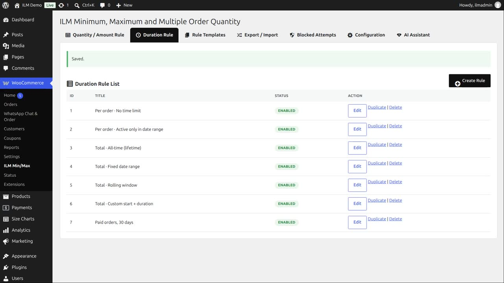

Pro add-on. This feature needs the Pro add-on. See Free and Pro.
Step 3 — Which orders count: tick the order statuses to add up (Processing, Completed, etc.). Leave every box unticked to count all orders regardless of status. This step only appears for the four "Total" types — the two "Per order" types don't need it.
Create a duration rule named Paid orders, thirty days, and pick Total, rolling window, thirty days.

Step three lists the order statuses. Only orders in the ticked statuses are added up: here Processing, Completed and On hold. Pending payment and cancelled orders are ignored.

The summary lists them. Save.

The Mountain fox cushion, maximum three, uses it.
Demo ordered two, five days ago, but that order is still Pending payment. It does not count, so the maximum is still three.